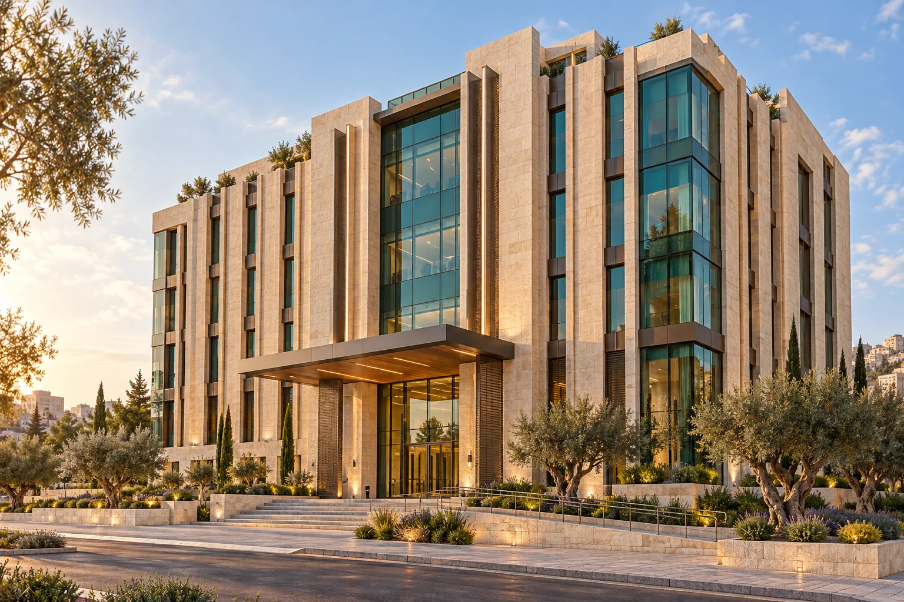

01 / 05Banking · Jordan
Bank al Etihad

A Jordanian bank providing personal and business banking services, with its roots and headquarters in Amman.
Amman · Jordan
Showcase stop · Booking appears only for a matching published Wusool branch.
AI architectural interpretation · Not a verified building replica.